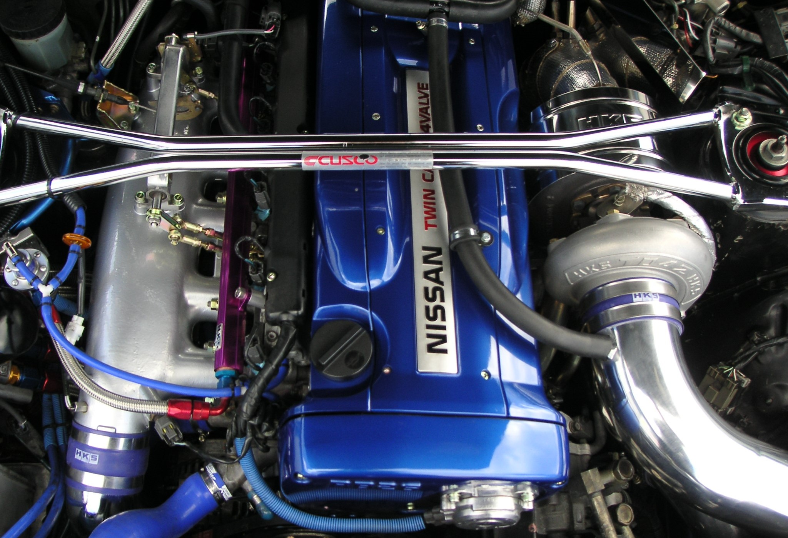
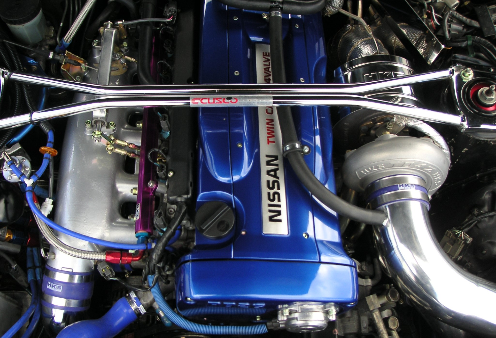

-
Teoria z dala od praktyki
Umowa istniała, producenci jej przestrzegali ale... tylko w teorii Praktyczne zastosowanie umowy było rzadko stosowane przez producentów, którzy szybko znaleźli sposoby na "lekkie" przekłamania w mocy
-
Toyota
Toyota jak kazdy inny producent była zoobowiązana przstrzegać umowy gentelmenów. W swoim królujacym w latach 90 silniku 2JZ-GTE stosowali gumową zwężke w dolocie.moc silnika faktycznie wynosiła 280KM ale po wyciągnięciu zwężki z doloty samochód dostawał boosta w postaci dodatkowych 40KM generujac 320KM

-
Nissan
Nissan był tym typem gracza który szedł na łatwizne. Na plakietce znamionowej modelu skyline gtr r34 podawał moc na poziome 280KM a w rzczywistosci samochód potrafił generować nawet 340KM.
 

wiecej na ten temat dowiesz sie z tego filmiku